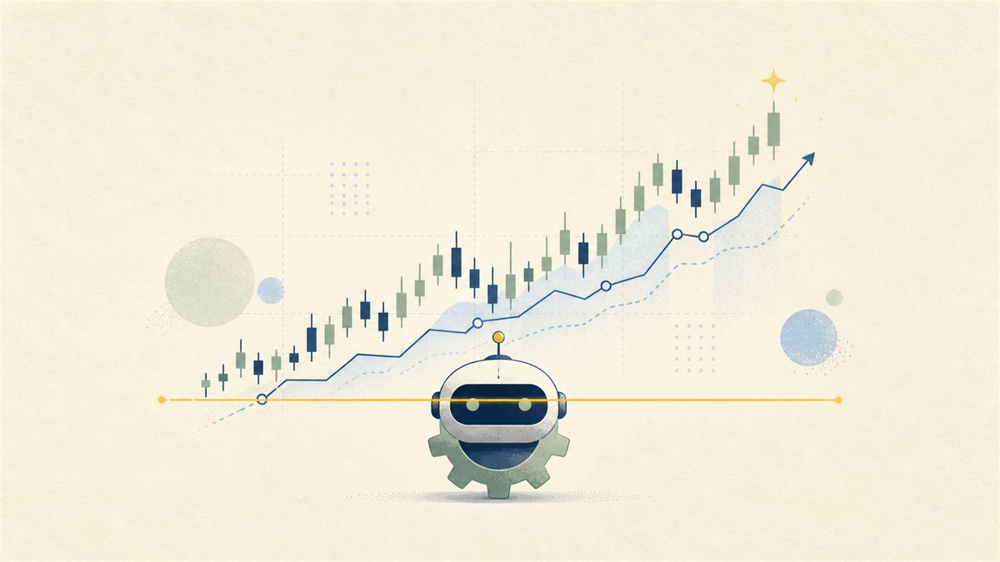
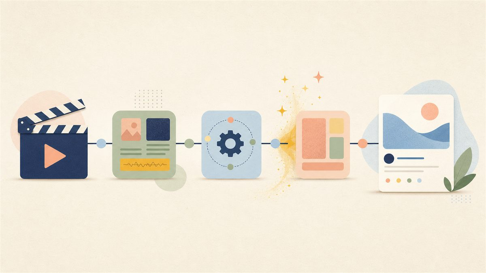

Senior Software Developer, ML Platform · ODAIA
Led the RDS → Snowflake migration (~$120K/yr saved, 1M-row ingest 30 min → 6 s). Built FastAPI services, Typer + Bitbucket deploy automation, and shipped the Beacon AI agent and JSON-driven BI systems.
// senior software engineer · ml platform
Hi, I'm Dustin Lin — I build multi-tenant data platforms and AI agents at ODAIA. Off the clock I ship my own agents and run dusty.notes_.
01 / About
I'm a software engineer with 4+ years building data platforms, ML pipelines, and AI agents. At ODAIA I led a pharma analytics platform's migration from RDS to a multi-tenant Snowflake architecture, and built the AI agent and BI systems on top of it. I like turning hard, ambiguous problems into reliable, well-architected products.
02 / Work Experience
Led the RDS → Snowflake migration (~$120K/yr saved, 1M-row ingest 30 min → 6 s). Built FastAPI services, Typer + Bitbucket deploy automation, and shipped the Beacon AI agent and JSON-driven BI systems.
Optimized Maptual for large client data (−50% runtime) with multiprocessing + Step Functions. Built Maptual Labs (−80% QA time) and a FastAPI data layer.
AI listing-error analyzer ($100K+ saved), computer-vision SKU-reversal app on Kubernetes, and an ML lead-time calculator (Amazon late shipping <4%).
03 / Selected Work · ODAIA

Multi-tenant Snowflake architecture with an idempotent MERGE ingestion pipeline and one-line onboarding.
Declarative BI: dashboards as JSON, rendered by a ~20-widget registry, authored from prompts.
Distributed AI agent connecting a chat UI to Claude Code workers via a smart routing gateway.

Scope-as-environment security model, RBAC enforced at four independent layers.
04 / Personal Projects
An AI-powered Instagram that auto-generates and posts news and ideas.

An autonomous agent that analyzes markets and executes strategies.

A pipeline that generates and publishes media content end-to-end.
05 / Connect
Want to work together or just say hi? Find me here.